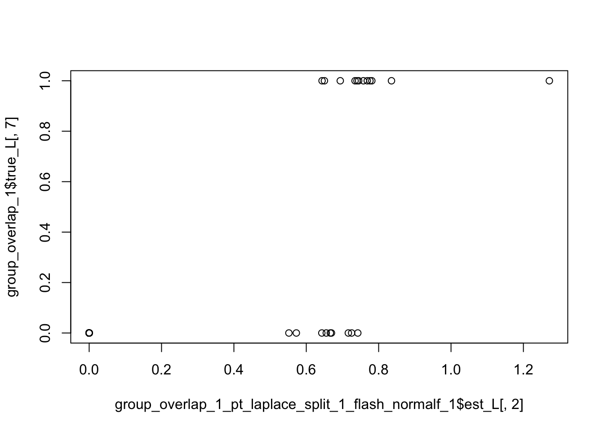
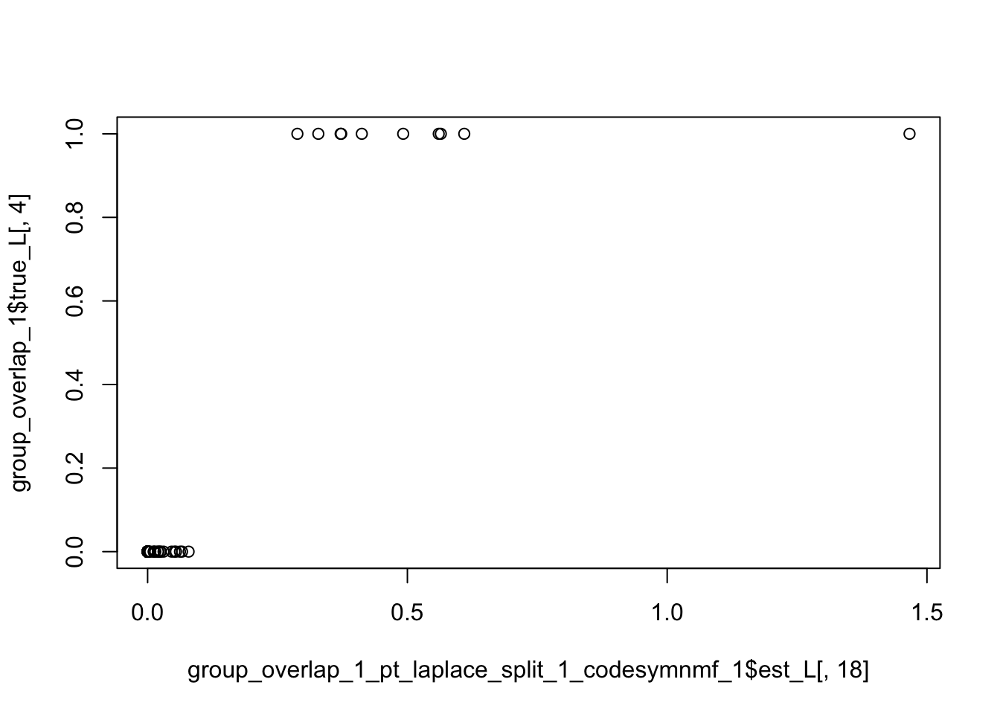

metric_threshold_exploration
Annie Xie
2025-09-24
Last updated: 2025-09-25
Checks: 7 0
Knit directory: covariance_decomps_dsc/
This reproducible R Markdown analysis was created with workflowr (version 1.7.1). The Checks tab describes the reproducibility checks that were applied when the results were created. The Past versions tab lists the development history.
Great! Since the R Markdown file has been committed to the Git repository, you know the exact version of the code that produced these results.
Great job! The global environment was empty. Objects defined in the global environment can affect the analysis in your R Markdown file in unknown ways. For reproduciblity it’s best to always run the code in an empty environment.
The command set.seed(20250203) was run prior to running
the code in the R Markdown file. Setting a seed ensures that any results
that rely on randomness, e.g. subsampling or permutations, are
reproducible.
Great job! Recording the operating system, R version, and package versions is critical for reproducibility.
Nice! There were no cached chunks for this analysis, so you can be confident that you successfully produced the results during this run.
Great job! Using relative paths to the files within your workflowr project makes it easier to run your code on other machines.
Great! You are using Git for version control. Tracking code development and connecting the code version to the results is critical for reproducibility.
The results in this page were generated with repository version 0f93cff. See the Past versions tab to see a history of the changes made to the R Markdown and HTML files.
Note that you need to be careful to ensure that all relevant files for
the analysis have been committed to Git prior to generating the results
(you can use wflow_publish or
wflow_git_commit). workflowr only checks the R Markdown
file, but you know if there are other scripts or data files that it
depends on. Below is the status of the Git repository when the results
were generated:
Ignored files:
Ignored: .DS_Store
Ignored: .Rhistory
Ignored: data/.DS_Store
Ignored: data/adclus_cov_comp_dsc_ex/.DS_Store
Ignored: data/adclus_same_init_dsc_ex/.DS_Store
Ignored: data/pt_laplace_split_init_ex/.DS_Store
Note that any generated files, e.g. HTML, png, CSS, etc., are not included in this status report because it is ok for generated content to have uncommitted changes.
These are the previous versions of the repository in which changes were
made to the R Markdown
(analysis/metric_threshold_exploration.Rmd) and HTML
(docs/metric_threshold_exploration.html) files. If you’ve
configured a remote Git repository (see ?wflow_git_remote),
click on the hyperlinks in the table below to view the files as they
were in that past version.
| File | Version | Author | Date | Message |
|---|---|---|---|---|
| Rmd | 0f93cff | Annie Xie | 2025-09-25 | wflow_publish(c("analysis/metric_threshold_exploration.Rmd"), |
Introduction
In this analysis, I do some investigation of the similarities between the estimated factors and the true factors. This exploration is meant to inform the threshold I will use for my metrics (and potentially stability selection).
library(dplyr)
library(ggplot2)
library(pheatmap)source('code/visualization_functions.R')compute_cosine_sim_matrix <- function(L1, L2){
norms1 <- apply(L1, 2, function(x){sqrt(sum(x^2))})
norms1[norms1 == 0] <- Inf
norms2 <- apply(L2, 2, function(x){sqrt(sum(x^2))})
norms2[norms2 == 0] <- Inf
L1_normalized <- t(t(L1)/norms1)
L2_normalized <- t(t(L2)/norms2)
#compute matrix of cosine similarities
cosine_sim_matrix <- crossprod(L1_normalized, L2_normalized)
return(cosine_sim_matrix)
}Sparse Overlapping
group_overlap_1 <- readRDS('data/group_overlap_1.rds')EBCD
group_overlap_1_pt_laplace_split_1_ebcd_1 <- readRDS('data/adclus_same_init_dsc_ex/group_overlap_1_pt_laplace_split_1_ebcd_1.rds')Correlation
idx.keep <- apply(group_overlap_1_pt_laplace_split_1_ebcd_1$est_L, 2, sd) > 0ebcd_true_corr <- cor(group_overlap_1_pt_laplace_split_1_ebcd_1$est_L[,idx.keep], group_overlap_1$true_L)par(mfrow = c(5, 4), # 4 rows, 5 columns
mar = c(2, 2, 1, 1), # margins: bottom, left, top, right
oma = c(2, 2, 2, 0))
for (i in 1:nrow(ebcd_true_corr)){
hist(ebcd_true_corr[i,], main = paste('similarity of factor', which(idx.keep == TRUE)[i]), xlab = 'similarity with true factors')
}
par(mfrow = c(1, 1))Cosine Similarity
ebcd_true_cos_sim <- compute_cosine_sim_matrix(group_overlap_1_pt_laplace_split_1_ebcd_1$est_L, group_overlap_1$true_L)par(mfrow = c(5, 4), # 4 rows, 5 columns
mar = c(2, 2, 1, 1), # margins: bottom, left, top, right
oma = c(2, 2, 2, 0))
for (i in 1:nrow(ebcd_true_cos_sim)){
hist(ebcd_true_cos_sim[i,], main = paste('similarity of factor', i), xlab = 'similarity with true factors')
}
par(mfrow = c(1, 1))Comparison of Metrics
par(mfrow = c(5, 4), # 4 rows, 5 columns
mar = c(2, 2, 1, 1), # margins: bottom, left, top, right
oma = c(2, 2, 2, 0))
for (i in 1:nrow(ebcd_true_corr)){
idx <- which(idx.keep == TRUE)[i]
plot(ebcd_true_corr[i,], ebcd_true_cos_sim[idx,], main = paste('factor', idx), xlab = 'correlation', ylab = 'cosine similarity')
abline(a=0, b=1, col = 'red')
}
par(mfrow = c(1, 1))Visualizations
These are the maximum similarities:
apply(ebcd_true_cos_sim, 1, max) [1] 0.3529622 0.9849862 0.9990676 0.9974883 0.8835195 0.4695338 0.2895608
[8] 0.9987775 0.9988787 0.5932402 0.9986467 0.5619221 0.9992722 0.9974120
[15] 0.4934529 0.9985857 0.1391694 0.5000000 0.9909524These are the true factors which are most similar to each estimated factor:
apply(ebcd_true_cos_sim, 1, which.max) [1] 3 10 6 4 10 4 8 2 1 7 7 9 8 9 7 3 8 5 5Factor 2 has 0.98 similarity with true factor 10.
plot(group_overlap_1_pt_laplace_split_1_ebcd_1$est_L[,2], group_overlap_1$true_L[,10])Factor 5 has 0.88 similarity with true factor 10.
plot(group_overlap_1_pt_laplace_split_1_ebcd_1$est_L[,5], group_overlap_1$true_L[,10])EBMFcov
group_overlap_1_pt_laplace_split_1_ebmfcov_diag_1 <- readRDS('data/adclus_same_init_dsc_ex/group_overlap_1_pt_laplace_split_1_ebmfcov_diag_1.rds')Correlation
idx.keep <- apply(group_overlap_1_pt_laplace_split_1_ebmfcov_diag_1$est_L, 2, sd) > 0ebmfcov_diag_true_corr <- cor(group_overlap_1_pt_laplace_split_1_ebmfcov_diag_1$est_L[,idx.keep], group_overlap_1$true_L)par(mfrow = c(5, 4), # 4 rows, 5 columns
mar = c(2, 2, 1, 1), # margins: bottom, left, top, right
oma = c(2, 2, 2, 0))
for (i in 1:nrow(ebmfcov_diag_true_corr)){
hist(ebmfcov_diag_true_corr[i,], main = paste('similarity of factor', which(idx.keep == TRUE)[i]), xlab = 'similarity with true factors')
}
par(mfrow = c(1, 1))Cosine Similarity
ebmfcov_diag_true_cos_sim <- compute_cosine_sim_matrix(group_overlap_1_pt_laplace_split_1_ebmfcov_diag_1$est_L, group_overlap_1$true_L)par(mfrow = c(5, 4), # 4 rows, 5 columns
mar = c(2, 2, 1, 1), # margins: bottom, left, top, right
oma = c(2, 2, 2, 0))
for (i in 1:nrow(ebmfcov_diag_true_cos_sim)){
hist(ebmfcov_diag_true_cos_sim[i,], main = paste('similarity of factor', i), xlab = 'similarity with true factors')
}
par(mfrow = c(1, 1))Comparison of Metrics
par(mfrow = c(5, 4), # 4 rows, 5 columns
mar = c(2, 2, 1, 1), # margins: bottom, left, top, right
oma = c(2, 2, 2, 0))
for (i in 1:nrow(ebmfcov_diag_true_corr)){
idx <- which(idx.keep == TRUE)[i]
plot(ebmfcov_diag_true_corr[i,], ebmfcov_diag_true_cos_sim[idx,], main = paste('factor', idx), xlab = 'correlation', ylab = 'cosine similarity')
abline(a=0, b=1, col = 'red')
}
par(mfrow = c(1, 1))Visualizations
These are the maximum similarities:
apply(ebmfcov_diag_true_cos_sim, 1, max) [1] 0.9981991 0.9988403 0.9994009 0.7965199 0.6688590 0.9987974 0.9984366
[8] 0.6224120 0.9991935 0.6278141 0.9144672 0.9989398 0.6829511 0.9996276
[15] 0.9992333These are the true factors which are most similar to each estimated factor:
apply(ebmfcov_diag_true_cos_sim, 1, which.max) [1] 10 6 4 10 8 2 1 4 7 9 8 9 10 3 5Factor 5 has 0.67 similarity with true factor 8.
plot(group_overlap_1_pt_laplace_split_1_ebmfcov_diag_1$est_L[,5], group_overlap_1$true_L[,8])Factor 11 has 0.91 similarity with true factor 8.
plot(group_overlap_1_pt_laplace_split_1_ebmfcov_diag_1$est_L[,11], group_overlap_1$true_L[,8])Factor 4 has 0.79 similarity with true factor 10.
plot(group_overlap_1_pt_laplace_split_1_ebmfcov_diag_1$est_L[,4], group_overlap_1$true_L[,10])Factor 1 has 0.99 similarity with true factor 10.
plot(group_overlap_1_pt_laplace_split_1_ebmfcov_diag_1$est_L[,1], group_overlap_1$true_L[,10])Factor 13 has 0.68 similarity with true factor 10.
plot(group_overlap_1_pt_laplace_split_1_ebmfcov_diag_1$est_L[,13], group_overlap_1$true_L[,10])Flash with Normal Prior on F
group_overlap_1_pt_laplace_split_1_flash_normalf_1 <- readRDS('data/adclus_same_init_dsc_ex/group_overlap_1_pt_laplace_split_1_flash_normalf_1.rds')Correlation
idx.keep <- apply(group_overlap_1_pt_laplace_split_1_flash_normalf_1$est_L, 2, sd) > 0flash_normalf_true_corr <- cor(group_overlap_1_pt_laplace_split_1_flash_normalf_1$est_L[,idx.keep], group_overlap_1$true_L)par(mfrow = c(5, 4), # 4 rows, 5 columns
mar = c(2, 2, 1, 1), # margins: bottom, left, top, right
oma = c(2, 2, 2, 0))
for (i in 1:nrow(flash_normalf_true_corr)){
hist(flash_normalf_true_corr[i,], main = paste('similarity of factor', which(idx.keep == TRUE)[i]), xlab = 'similarity with true factors')
}
par(mfrow = c(1, 1))
Cosine Similarity
flash_normalf_true_cos_sim <- compute_cosine_sim_matrix(group_overlap_1_pt_laplace_split_1_flash_normalf_1$est_L, group_overlap_1$true_L)par(mfrow = c(5, 4), # 4 rows, 5 columns
mar = c(2, 2, 1, 1), # margins: bottom, left, top, right
oma = c(2, 2, 2, 0))
for (i in 1:nrow(flash_normalf_true_cos_sim)){
hist(flash_normalf_true_cos_sim[i,], main = paste('similarity of factor', i), xlab = 'similarity with true factors')
}
par(mfrow = c(1, 1))Comparison of Metrics
par(mfrow = c(5, 4), # 4 rows, 5 columns
mar = c(2, 2, 1, 1), # margins: bottom, left, top, right
oma = c(2, 2, 2, 0))
for (i in 1:nrow(flash_normalf_true_corr)){
idx <- which(idx.keep == TRUE)[i]
plot(flash_normalf_true_corr[i,], flash_normalf_true_cos_sim[idx,], main = paste('factor', idx), xlab = 'correlation', ylab = 'cosine similarity')
abline(a=0, b=1, col = 'red')
}
par(mfrow = c(1, 1))
Visualizations
These are the maximum similarities:
apply(flash_normalf_true_cos_sim, 1, max) [1] 0.9027384 0.7961755 0.9996670 0.3605551 0.3605551 0.9990344 0.9987087
[8] 0.7161576 0.3605551 0.3605551 0.7544813 0.9992848 0.3605551 0.9995904
[15] 0.9989671These are the true factors which are most similar to each estimated factor:
apply(flash_normalf_true_cos_sim, 1, which.max) [1] 10 7 4 10 10 2 1 7 10 10 8 9 10 3 5Factor 2 has 0.79 similarity with true factor 7.
plot(group_overlap_1_pt_laplace_split_1_flash_normalf_1$est_L[,2], group_overlap_1$true_L[,7])
Factor 8 has 0.71 similarity with true factor 7.
plot(group_overlap_1_pt_laplace_split_1_flash_normalf_1$est_L[,8], group_overlap_1$true_L[,7])SINDCLUS
group_overlap_1_pt_laplace_split_1_sindclus_2 <- readRDS('data/adclus_same_init_dsc_ex/group_overlap_1_pt_laplace_split_1_sindclus_2.rds')Correlation
idx.keep <- apply(group_overlap_1_pt_laplace_split_1_sindclus_2$est_L, 2, sd) > 0sindclus_true_corr <- cor(group_overlap_1_pt_laplace_split_1_sindclus_2$est_L[,idx.keep], group_overlap_1$true_L)par(mfrow = c(5, 4), # 4 rows, 5 columns
mar = c(2, 2, 1, 1), # margins: bottom, left, top, right
oma = c(2, 2, 2, 0))
for (i in 1:nrow(sindclus_true_corr)){
hist(sindclus_true_corr[i,], main = paste('similarity of factor', which(idx.keep == TRUE)[i]), xlab = 'similarity with true factors')
}
par(mfrow = c(1, 1))Cosine Similarity
sindclus_true_cos_sim <- compute_cosine_sim_matrix(group_overlap_1_pt_laplace_split_1_sindclus_2$est_L, group_overlap_1$true_L)par(mfrow = c(5, 4), # 4 rows, 5 columns
mar = c(2, 2, 1, 1), # margins: bottom, left, top, right
oma = c(2, 2, 2, 0))
for (i in 1:nrow(sindclus_true_corr)){
hist(sindclus_true_cos_sim[i,], main = paste('similarity of factor', i), xlab = 'similarity with true factors')
}
par(mfrow = c(1, 1))Comparison of Metrics
par(mfrow = c(5, 4), # 4 rows, 5 columns
mar = c(2, 2, 1, 1), # margins: bottom, left, top, right
oma = c(2, 2, 2, 0))
for (i in 1:nrow(sindclus_true_corr)){
idx <- which(idx.keep == TRUE)[i]
plot(sindclus_true_corr[i,], sindclus_true_cos_sim[idx,], main = paste('factor', idx), xlab = 'correlation', ylab = 'cosine similarity')
abline(a=0, b=1, col = 'red')
}
par(mfrow = c(1, 1))Visualizations
These are the maximum similarities:
apply(sindclus_true_cos_sim, 1, max) [1] 0.0000000 1.0000000 1.0000000 1.0000000 1.0000000 0.5590170 0.5012804
[8] 1.0000000 1.0000000 0.8432740 1.0000000 0.5883484 1.0000000 1.0000000
[15] 0.3464102 1.0000000 0.2500000 0.5000000 1.0000000These are the true factors which are most similar to each estimated factor:
apply(sindclus_true_cos_sim, 1, which.max) [1] 1 10 6 4 10 4 10 2 1 4 7 9 8 9 7 3 9 5 5Factor 10 has 0.84 similarity with true factor 4.
plot(group_overlap_1_pt_laplace_split_1_sindclus_2$est_L[,10], group_overlap_1$true_L[,4])SYMPRES
group_overlap_1_pt_laplace_split_1_sympres_2 <- readRDS('data/adclus_same_init_dsc_ex/group_overlap_1_pt_laplace_split_1_sympres_2.rds')Correlation
idx.keep <- apply(group_overlap_1_pt_laplace_split_1_sympres_2$est_L, 2, sd) > 0sympres_true_corr <- cor(group_overlap_1_pt_laplace_split_1_sympres_2$est_L[,idx.keep], group_overlap_1$true_L)par(mfrow = c(5, 4), # 4 rows, 5 columns
mar = c(2, 2, 1, 1), # margins: bottom, left, top, right
oma = c(2, 2, 2, 0))
for (i in 1:nrow(sympres_true_corr)){
hist(sympres_true_corr[i,], main = paste('similarity of factor', which(idx.keep == TRUE)[i]), xlab = 'similarity with true factors')
}
par(mfrow = c(1, 1))Cosine Similarity
sympres_true_cos_sim <- compute_cosine_sim_matrix(group_overlap_1_pt_laplace_split_1_sympres_2$est_L, group_overlap_1$true_L)par(mfrow = c(5, 4), # 4 rows, 5 columns
mar = c(2, 2, 1, 1), # margins: bottom, left, top, right
oma = c(2, 2, 2, 0))
for (i in 1:nrow(sympres_true_cos_sim)){
hist(sympres_true_cos_sim[i,], main = paste('similarity of factor', i), xlab = 'similarity with true factors')
}
par(mfrow = c(1, 1))Comparison of Metrics
par(mfrow = c(5, 4), # 4 rows, 5 columns
mar = c(2, 2, 1, 1), # margins: bottom, left, top, right
oma = c(2, 2, 2, 0))
for (i in 1:nrow(sympres_true_corr)){
idx <- which(idx.keep == TRUE)[i]
plot(sympres_true_corr[i,], sympres_true_cos_sim[idx,], main = paste('factor', idx), xlab = 'correlation', ylab = 'cosine similarity')
abline(a=0, b=1, col = 'red')
}
par(mfrow = c(1, 1))Visualizations
These are the maximum similarities:
apply(sympres_true_cos_sim, 1, max) [1] 0.3067860 1.0000000 1.0000000 0.9486833 1.0000000 0.8366600 0.5078334
[8] 1.0000000 1.0000000 0.9486833 1.0000000 0.5477226 1.0000000 1.0000000
[15] 0.3086067 1.0000000 0.2000000 0.0000000 1.0000000These are the true factors which are most similar to each estimated factor:
apply(sympres_true_cos_sim, 1, which.max) [1] 4 10 6 4 10 4 4 2 1 4 7 4 8 9 9 3 6 1 5Factor 6 has 0.83 similarity with true factor 4.
plot(group_overlap_1_pt_laplace_split_1_sympres_2$est_L[,6], group_overlap_1$true_L[,4])CoDesymNMF
group_overlap_1_pt_laplace_split_1_codesymnmf_1 <- readRDS('data/symnmf_same_init_dsc_ex/group_overlap_1_pt_laplace_split_1_codesymnmf_1.rds')Correlation
idx.keep <- apply(group_overlap_1_pt_laplace_split_1_codesymnmf_1$est_L, 2, sd) > 0codesymnmf_true_corr <- cor(group_overlap_1_pt_laplace_split_1_codesymnmf_1$est_L[,idx.keep], group_overlap_1$true_L)par(mfrow = c(5, 4), # 4 rows, 5 columns
mar = c(2, 2, 1, 1), # margins: bottom, left, top, right
oma = c(2, 2, 2, 0))
for (i in 1:nrow(codesymnmf_true_corr)){
hist(codesymnmf_true_corr[i,], main = paste('similarity of factor', which(idx.keep == TRUE)[i]), xlab = 'similarity with true factors')
}
par(mfrow = c(1, 1))Cosine Similarity
codesymnmf_true_cos_sim <- compute_cosine_sim_matrix(group_overlap_1_pt_laplace_split_1_codesymnmf_1$est_L, group_overlap_1$true_L)par(mfrow = c(5, 4), # 4 rows, 5 columns
mar = c(2, 2, 1, 1), # margins: bottom, left, top, right
oma = c(2, 2, 2, 0))
for (i in 1:nrow(codesymnmf_true_cos_sim)){
hist(codesymnmf_true_cos_sim[i,], main = paste('similarity of factor', i), xlab = 'similarity with true factors')
}
par(mfrow = c(1, 1))Comparison of Metrics
par(mfrow = c(5, 4), # 4 rows, 5 columns
mar = c(2, 2, 1, 1), # margins: bottom, left, top, right
oma = c(2, 2, 2, 0))
for (i in 1:nrow(codesymnmf_true_corr)){
idx <- which(idx.keep == TRUE)[i]
plot(codesymnmf_true_corr[i,], codesymnmf_true_cos_sim[idx,], main = paste('factor', idx), xlab = 'correlation', ylab = 'cosine similarity')
abline(a=0, b=1, col = 'red')
}
par(mfrow = c(1, 1))Visualizations
These are the maximum similarities:
apply(codesymnmf_true_cos_sim, 1, max) [1] 0.74615390 0.89139762 0.98143560 0.97053596 0.96123138 0.77254251
[7] 0.12260474 0.99376601 0.99485317 0.89471704 0.98134794 0.75604883
[13] 0.98816472 0.98707098 0.08574252 0.99674472 0.81653996 0.85779493
[19] 0.98750239These are the true factors which are most similar to each estimated factor:
apply(codesymnmf_true_cos_sim, 1, which.max) [1] 10 10 6 4 10 8 8 2 1 7 7 9 8 9 7 3 6 4 5Factor 1 has 0.74 similarity with true factor 10.
plot(group_overlap_1_pt_laplace_split_1_codesymnmf_1$est_L[,1], group_overlap_1$true_L[,10])
Factor 2 has 0.89 similarity with true factor 10.
plot(group_overlap_1_pt_laplace_split_1_codesymnmf_1$est_L[,2], group_overlap_1$true_L[,10])Factor 5 has 0.96 similarity with true factor 10.
plot(group_overlap_1_pt_laplace_split_1_codesymnmf_1$est_L[,5], group_overlap_1$true_L[,10])Factor 6 has 0.77 similarity with true factor 8.
plot(group_overlap_1_pt_laplace_split_1_codesymnmf_1$est_L[,6], group_overlap_1$true_L[,8])Factor 12 has 0.75 similarity with true factor 9.
plot(group_overlap_1_pt_laplace_split_1_codesymnmf_1$est_L[,12], group_overlap_1$true_L[,9])Factor 18 has 0.85 similarity with true factor 4.
plot(group_overlap_1_pt_laplace_split_1_codesymnmf_1$est_L[,18], group_overlap_1$true_L[,4])
Factor 17 has 0.81 similarity with true factor 6.
plot(group_overlap_1_pt_laplace_split_1_codesymnmf_1$est_L[,17], group_overlap_1$true_L[,6])Observations
For many of the factors, the distribution of the similarity values has one value in the 0.8-1.0 bucket and the other 9 values below 0.4. The large gap suggests that a stringent threshold of e.g. 0.99 may not be necessary. In practice, there is often no “true” effect and overall the effects are more complex and less clear. So the focus doesn’t need to be whether the method gets it absolutely correct; it can lean more toward whether the method is able to generally pick up the correct structure (even if the values are not exactly correct).
In comparing the cosine similarity and the correlation (for the factors for which correlation is defined), we generally see that when correlation is high, cosine similarity is also high. So I don’t think it matters too much what metric I use (though I did find one example where the metrics are different; that is something to think about).
Taking a closer look at some of the factors which have 0.6-1 similarity, I found that 0.9 seemed like a good cutoff for finding factors which (usually) have the correct separation of zero (or close to zero) values and non-zero values. There are some cases where the similarity is 0.85-0.9 and it does find the correct separation, but other cases where the similarity is in the range and it does not find the correct separation. I want to look at more pairs of factors with similarities in this range to get a better sense of how often the separation is generally correct.
sessionInfo()R version 4.3.2 (2023-10-31)
Platform: aarch64-apple-darwin20 (64-bit)
Running under: macOS 15.6
Matrix products: default
BLAS: /Library/Frameworks/R.framework/Versions/4.3-arm64/Resources/lib/libRblas.0.dylib
LAPACK: /Library/Frameworks/R.framework/Versions/4.3-arm64/Resources/lib/libRlapack.dylib; LAPACK version 3.11.0
locale:
[1] en_US.UTF-8/en_US.UTF-8/en_US.UTF-8/C/en_US.UTF-8/en_US.UTF-8
time zone: America/Chicago
tzcode source: internal
attached base packages:
[1] stats graphics grDevices utils datasets methods base
other attached packages:
[1] pheatmap_1.0.12 ggplot2_3.5.2 dplyr_1.1.4 workflowr_1.7.1
loaded via a namespace (and not attached):
[1] softImpute_1.4-3 gtable_0.3.6 flashier_1.0.56
[4] xfun_0.52 bslib_0.9.0 htmlwidgets_1.6.4
[7] ggrepel_0.9.6 processx_3.8.4 ebnm_1.1-34
[10] lattice_0.22-6 callr_3.7.6 quadprog_1.5-8
[13] vctrs_0.6.5 tools_4.3.2 ps_1.7.7
[16] generics_0.1.4 parallel_4.3.2 Polychrome_1.5.1
[19] tibble_3.3.0 pkgconfig_2.0.3 Matrix_1.6-5
[22] data.table_1.17.6 SQUAREM_2021.1 RColorBrewer_1.1-3
[25] RcppParallel_5.1.10 scatterplot3d_0.3-44 lifecycle_1.0.4
[28] truncnorm_1.0-9 compiler_4.3.2 farver_2.1.2
[31] stringr_1.5.1 git2r_0.33.0 progress_1.2.3
[34] RhpcBLASctl_0.23-42 getPass_0.2-4 httpuv_1.6.15
[37] htmltools_0.5.8.1 sass_0.4.10 lazyeval_0.2.2
[40] yaml_2.3.10 plotly_4.11.0 crayon_1.5.3
[43] tidyr_1.3.1 later_1.4.2 pillar_1.10.2
[46] jquerylib_0.1.4 whisker_0.4.1 uwot_0.2.3
[49] cachem_1.1.0 trust_0.1-8 gtools_3.9.5
[52] tidyselect_1.2.1 digest_0.6.37 Rtsne_0.17
[55] stringi_1.8.7 purrr_1.0.4 ashr_2.2-66
[58] splines_4.3.2 cowplot_1.1.3 rprojroot_2.0.4
[61] fastmap_1.2.0 grid_4.3.2 colorspace_2.1-1
[64] cli_3.6.5 invgamma_1.1 magrittr_2.0.3
[67] withr_3.0.2 prettyunits_1.2.0 scales_1.4.0
[70] promises_1.3.3 horseshoe_0.2.0 rmarkdown_2.29
[73] httr_1.4.7 fastTopics_0.6-192 deconvolveR_1.2-1
[76] hms_1.1.3 pbapply_1.7-2 evaluate_1.0.4
[79] knitr_1.50 viridisLite_0.4.2 irlba_2.3.5.1
[82] rlang_1.1.6 Rcpp_1.0.14 mixsqp_0.3-54
[85] glue_1.8.0 rstudioapi_0.16.0 jsonlite_2.0.0
[88] R6_2.6.1 fs_1.6.6